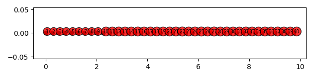
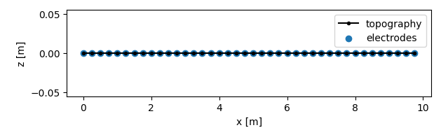

Note
Click here to download the full example code
TSERT: Using the TSERT file format¶
The TSERT file format is an experimental file format that stores monitoring (time-lapse) electrical data, as well as electrode positions, topography and metadata within one file for easy access and distribution.
import os
import datetime
import pprint
import numpy as np
import pandas as pd
import reda
Lets clean up output files
if os.path.isfile('data.h5'):
os.unlink('data.h5')
Export data to the tsert file format
ert = reda.ERT()
# set electrode positions
electrodes = reda.electrode_manager()
electrodes.add_by_position(np.arange(0, 40) * 0.25)
ert.electrode_positions = electrodes.electrode_positions
# set topography
topography = pd.DataFrame(columns=['x', 'y', 'z'])
topography['x'] = np.arange(0, 40) * 0.25
topography['y'] = 0
topography['z'] = 0
ert.topography = topography
# add some arbitrary metadata
ert.metadata['measurement_device'] = 'IRIS Syscal Pro 48 ch'
ert.metadata['person_responsible'] = 'Maximilian Weigand'
ert.metadata['nr_electrodes'] = 48
ert.metadata['electrode_spacing'] = 1
# lets add a subgroup containing device-specific information
ert.metadata['device_specific'] = {
'max_current': 2,
'memory_block': 2567,
}
# # version 1
ert.import_crtomo_data(
'data/2018-04-13_11-00-25+00-00.dat',
timestep=datetime.datetime(2018, 5, 13),
)
ert.import_crtomo_data(
'data/2018-06-01_09-00-43+00-00.dat',
timestep=datetime.datetime(2018, 6, 1)
)
ert.import_crtomo_data(
'data/2018-08-02_09-00-14+00-00.dat',
timestep=datetime.datetime(2018, 8, 2),
)
# version 2: MANY timesteps
# for i in range(0, 4):
# ert.import_crtomo_data('data/2018-08-02_09-00-14+00-00.dat', timestep=i)
ert.export_tsert(
'data.h5',
version='base',
)
Out:
TODO: Fix logging format
@@@@@@@@@@@@@@@@@@@@@@@
2018-05-13 00:00:00
index Empty DataFrame
Columns: [value]
Index: []
ts_key: 0
key ERT_DATA/0/base
@@@@@@@@@@@@@@@@@@@@@@@
2018-06-01 00:00:00
index value
0 2018-05-13
ts_key: 1
key ERT_DATA/1/base
@@@@@@@@@@@@@@@@@@@@@@@
2018-08-02 00:00:00
index value
0 2018-05-13
1 2018-06-01
ts_key: 2
key ERT_DATA/2/base
Loading data from the tsert file format
# create an ert container
ert = reda.ERT()
# this is an optional command: it summarises a given file without loading
# anything
ert.tsert_summary('data.h5', print_index=True)
# do the actual import
ert.import_tsert(
'data.h5',
# not_before=datetime.datetime(2018, 5, 20),
# not_after=datetime.datetime(2018, 7, 20),
)
print(ert.data.groupby('timestep').groups.keys())
assert ert.data.shape[0] == 1962, \
"Expected number of data points is {}".format(1962)
Out:
TODO: Fix logging format
################################################################################
Summary of file: data.h5
Format metadata:
File format: tsert
Format version: 0.1
------------------------------------------------------------
Number of time steps: 3
1: /ERT_DATA/0
2: /ERT_DATA/1
3: /ERT_DATA/2
Available versions:
- Version base is present 3 times
################################################################################
-----------------
Index dataframe:
value
0 2018-05-13
1 2018-06-01
2 2018-08-02
-----------------
TODO: Fix logging format
DTYPES value datetime64[ns]
dtype: object
loading version: base
ERT_DATA/0/base
timestep 2018-05-13 00:00:00
ERT_DATA/1/base
timestep 2018-06-01 00:00:00
ERT_DATA/2/base
timestep 2018-08-02 00:00:00
dict_keys([Timestamp('2018-05-13 00:00:00'), Timestamp('2018-06-01 00:00:00'), Timestamp('2018-08-02 00:00:00')])
We can plot the electrode positions:
Out:
(<Figure size 629.921x157.48 with 1 Axes>, None)
We can also plot topography and electrodes:
Out:
(<Figure size 629.921x196.85 with 1 Axes>, <AxesSubplot:xlabel='x [m]', ylabel='z [m]'>)
Lets have a look at the imported metadata
Out:
{'device_specific': {'max_current': 2, 'memory_block': 2567},
'electrode_spacing': 1,
'measurement_device': 'IRIS Syscal Pro 48 ch',
'nr_electrodes': 48,
'person_responsible': 'Maximilian Weigand'}
If timesteps are datetimes then imports can be limited by the not_before and not_after parameters
# create an ert container
ert = reda.ERT()
ert.import_tsert(
'data.h5',
not_before=datetime.datetime(2018, 5, 20),
)
print(ert.data.groupby('timestep').groups.keys())
ert = reda.ERT()
ert.import_tsert(
'data.h5',
not_after=datetime.datetime(2018, 7, 20),
)
print(ert.data.groupby('timestep').groups.keys())
Out:
TODO: Fix logging format
DTYPES value datetime64[ns]
dtype: object
TRUNCATING
TS_KEYS filtered value
2018-06-01 1
2018-08-02 2
Name: index, dtype: int64
loading version: base
ERT_DATA/1/base
timestep 2018-06-01 00:00:00
ERT_DATA/2/base
timestep 2018-08-02 00:00:00
dict_keys([Timestamp('2018-06-01 00:00:00'), Timestamp('2018-08-02 00:00:00')])
TODO: Fix logging format
DTYPES value datetime64[ns]
dtype: object
TRUNCATING
TS_KEYS filtered value
2018-05-13 0
2018-06-01 1
Name: index, dtype: int64
loading version: base
ERT_DATA/0/base
timestep 2018-05-13 00:00:00
ERT_DATA/1/base
timestep 2018-06-01 00:00:00
dict_keys([Timestamp('2018-05-13 00:00:00'), Timestamp('2018-06-01 00:00:00')])